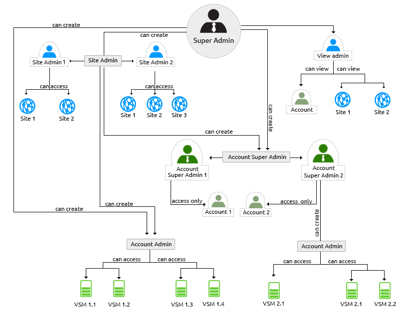
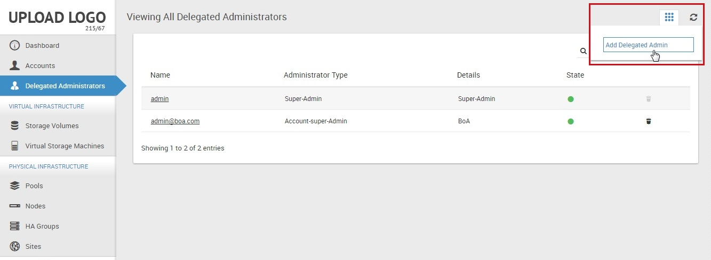
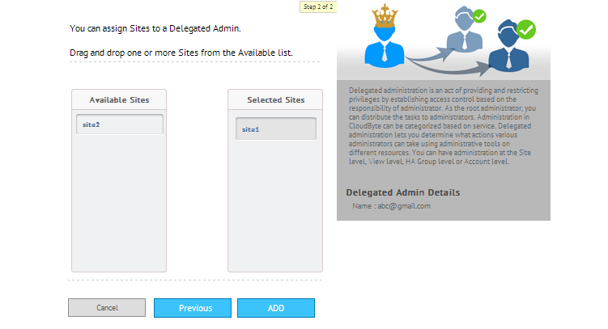
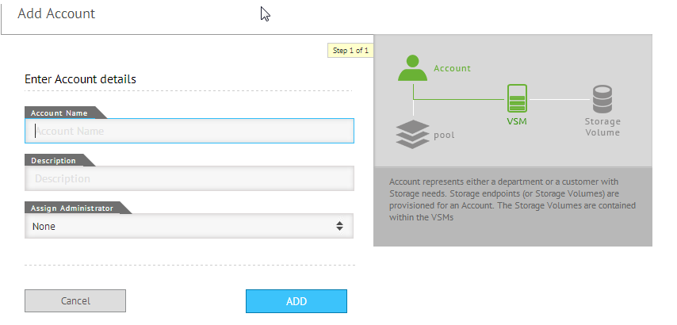

Delegated administration
Administration in CloudByte can be categorized based on services. You can have administration at the Site level or at the Account level. Your Site can have multiple Site administrators.
Note: Currently, CloudByte ElastiStor supports only role-based administration. Future releases will have delegated administration fully implemented.
As the root administrator, you can distribute the tasks to administrators. Delegated administration is an act of providing and restricting privileges by establishing access control based on the responsibility of each individual administrator.
- Delegated administration lets you determine the actions that each administrator can take using administrative tools on different resources.
- Delegated administration roles are mapped to administrative functions using security policies. You can create and maintain separate administration capabilities, depending on your needs.
- You establish delegated administration by creating role hierarchy.
- Role hierarchy enables you to keep a tight control on how delegation happens and who can delegate what to whom. One administrator can create sub-roles for other administrators with limited administrative privileges.
Role hierarchy
The following is a pictorial representation of how role-hierarchy functions in CloudByte ElastiStor administration:

| Administrator | Can | Cannot |
| Super administrator | Perform all possible actions across Sites, Accounts, and VSMs | Not applicable |
| Site administrator |
|
Delete/Modify/Create another Site administrator |
| Account super dministrator |
|
|
| Account administrator | Manage what is permitted within the Account | Manage other account admins within the Account. |
| View administrator |
|
|
Note: You can only have one super administrator. Only the super administrator can change his/her password. Administrators can change their password and passwords of administrators under them.
Adding delegated administrators
Create Site administrators or view administrators
Note: You can create Site administrators or view administrators only if you are a super administrator.
- Log in as a super administrator.
- In the navigation pane, select Delegated Administrator. The Delegated Administrators page appears.

- Click Add Delegated Admin in Actions Icon.
- In the Add Delegated Admin Details page, specify the following details:
- Email: Specify a unique email address for the Site administrator or View administrator
- Password: Administrator password
- Delegated Admin Type:Select the type of Delegated Administrator from the drop-down menu
- Click Next and then drag and drop one or more Sites for which you want to delegate administration as seen in the following screen:
- Click Add.

Create Account administrators
You can create Account administrators for either existing or new accounts.
Create Account administrators for a new account
Note: The type of administrator that you can assign tasks to depends on the privileges you have.
- In ElastiCenter, select Accounts in the navigation pane.
- In the Accounts page, click Add Account in Actions Icon.
- In the Account Details page, when you specify the account details, choose the type of administrator that you want to create (Account Super Admin or Account Admin).

- Specify the credentials for the administrator and then click Add Account.
Create Account administrators for an existing account
Note: The type of administrator that you can assign task to depends on the privileges you have.
- In ElastiCenter, select Accounts in the navigation pane.
- In the Accounts page, select the account for which you want to add new administrators.
- In the following page, click Add Administrator in the Delegated Administration section of the actions icon.
- In the Add Account dialog box, specify the details and then click ADD.
Global Settings
Global settings let the administrator configure various options used to control CloudByte ElastiStor. For example, email configuration. To configure global settings,
- In ElastiCenter, select Global Settings.
- Select a target category. A list of settings is provided by default.
- Edit the relevant settings.
Note: You cannot add new settings